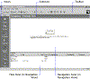

| ||||
The FrontPage Explorer is a main component of Microsoft FrontPage. You use the FrontPage Explorer to build new Web sites and later to change, maintain, administer, and publish established FrontPage-based Web sites.
The seven buttons on the FrontPage Explorer's Views bar provide different ways of looking at information in your FrontPage-based Web site. You can choose how you want to view the contents of your Web site throughout the project -- from the early steps of creating a new Web site, to the moment it is ready to be published on the World Wide Web.
Figure 1. Navigation button
Select the Navigation view by clicking the Navigation button on the FrontPage Explorer's Views bar.
The Navigation view consists of a split-screen display that shows the top-level structure of your FrontPage-based Web site in the upper half of the screen (the Navigation pane), and a familiar Windows Explorer-like file and folder list in the lower half of the screen (the Files pane).

Click to enlargeFigure 2. Selecting views
During this lesson, you will primarily use the Navigation view and the Themes view for the construction of your new FrontPage-based Web site.